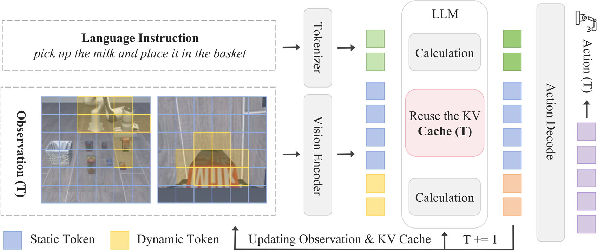
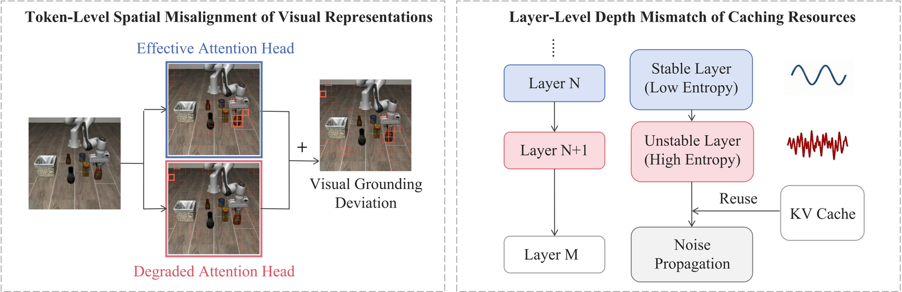
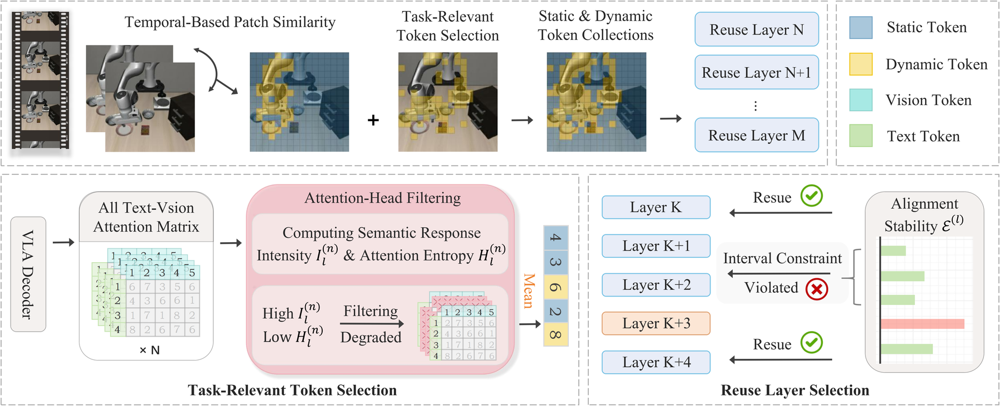
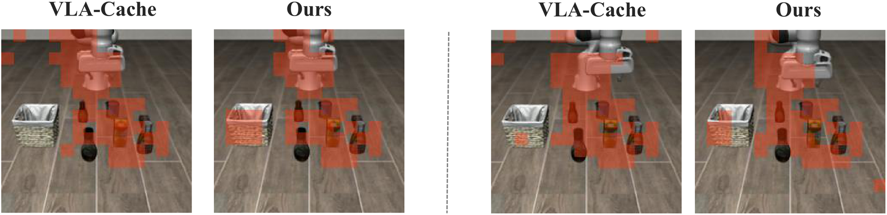
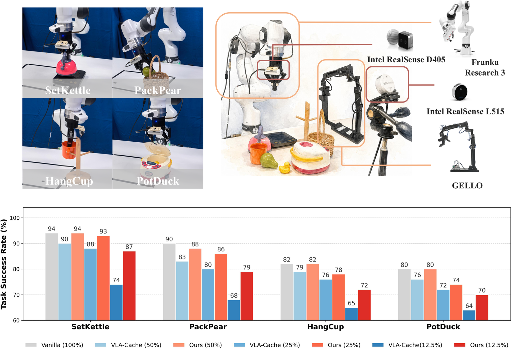

能拿到的是：两个可以直接抄走的、免训练的统计量——用「文本→视觉注意力强度 + 熵」给每个 head 打分，用「逐层文本-视觉熵」给复用层排序并施加最小层距约束。代价很小（实测 2.84–2.89 ms 固定开销），在 OpenVLA-OFT 12.5% 保留率上把 VLA-Cache 的 69.50% 拉到 84.00%；但这份收益里有 12.7 个百分点来自「选层」，head 过滤只贡献 1.4 个百分点。
- 最小可复用件
- head 可靠性评分
S_head(n) = α·I_l^(n) − β·H_l^(n)（α=β=0.5）加上层稳定性门限R^(l) = 1 − Ē^(l)与K=4, d_min=2的间隔贪心选层；两者都只读现成注意力矩阵，不训练、不改权重。 - 主要风险
- 论文没给
τ、τ_task和被选 head 数|M_l|，head 过滤这一半基本无法照抄；α=β=0.5下强度项量级是 [0,1]、熵项量级是 [0, log L_v]，按定义熵会压倒强度，实际行为更像「只按集中度挑 head」；且全文没有任何显式的缓存失效/置信度门控，指令切换与分布外场景下缓存是否该整体作废，论文没有回答。 - 复现门槛
- 无需训练、无需校准。四个 backbone（OpenVLA-OFT、BitVLA、π0.5、VLA-Adapter）+ LIBERO/CALVIN + Franka Research 3 真机；单卡 RTX 4090 即可测延迟（batch=1、BF16）。真正的门槛是超参缺失：
τ、τ_task、|M_l|都得自己重扫。
1 核心摘要
问题被作者框成一句话：已有的 VLA token caching 没有用上 VLA 模型自己的归纳偏置——文本语义会引导视觉定位。VLA-Cache 的三段式判定（像素相似度提名静态 token、text-to-vision 注意力剔除任务相关 token、按层调复用比例）已经把这条线跑通，但它对两个量一视同仁：所有 attention head 平均、所有层同等地参与复用决策。
论文把这种「一视同仁」拆成两个具体瓶颈，并各给一个统计量。token 级：不同 head 的跨模态行为差别很大，有的 sharp 地指向交互区域，有的把注意力铺在背景上，直接对 head 求平均会把信息性响应稀释掉，导致选出的「任务相关 token」偏向背景（作者称之为 spatial misalignment）。TVCache 的做法是对每个 head 计算两个量——I_l^(n)（文本 token 分给视觉 token 的注意力份额，衡量跨模态参与度）与 H_l^(n)（该分布在视觉维上的香农熵，衡量空间集中度），合成 S_head = 0.5·I − 0.5·H，只保留高分 head 组成集合 M_l，再用这批 head 平均出每个视觉 token 的相关性 V_j，超过 τ_task 的进入 P_task，最终可复用集合是 P_reuse = P_static \ P_task。
层 级：跨模态表征在网络深度上不是均匀稳定的，在「还没稳定」的层复用会把噪声往下游传，在「已经稳定」之后才开始复用又白算了几层（作者称之为 depth mismatch）。TVCache 对每层算文本→视觉注意力的熵 E^(l) = H(C̃_l)，取 R^(l) = 1 − Ē^(l)（Ē 为跨层 min-max 归一化后的熵），在预算 K 层、最小层距 d_min 的约束下用间隔贪心选出复用层集合 K_reuse，再给这 4 层分配单调递增的保留比例 γ^(l) = [0.5, 0.65, 0.8, 1.0]，末层强制 100% 保留。
超参在四个 backbone、两个仿真基准上完全固定：α=β=0.5、K=4、d_min=2、γ 调度如上，不做模型级或基准级调参——这是它「training-free + plug-and-play」的实际含义：不训练、不校准，只在前向时读注意力矩阵。
证据侧最硬的一组数字在 OpenVLA-OFT 上：12.5% 保留率时平均成功率 84.00%（VLA-Cache 69.50%，full-token 97.15%），FLOPs 1.6414 T 对全量 4.0139 T（2.45×），端到端延迟 66.51 ms 对 95.87 ms（1.44×），控制频率 10.43→15.04 Hz。四个 backbone 全部在同等保留率下优于 VLA-Cache，但在 BitVLA 上优势只有 0.4–1.75 个百分点。
判定：相对 VLA-Cache，它改的不是机制骨架而是两个「统计口径」——把 head 平均换成分位数筛选，把「按层熵调比例」换成「按层熵选 4 层 + 层距约束 + 单调 γ」。真正值得抄的是这两个统计量的定义方式和「层距约束」这个小技巧；但消融显示 12.5% 下 +14.50 pp 里有 +12.70 来自选层，head 过滤只有 +1.40，所以如果你的算力预算只够实现一半，先实现选层那一半。
2 复用机制定位
它在六个环节里主命中两格：复用候选（沿用时间相似度提名 + 加一层 head 加权后的任务相关性剔除）与层与预算（改成「选 4 层 + 层距约束 + 深度递增保留率」，这是相对 VLA-Cache 改动最大的一块）。失效判定只是部分命中：它有一个「哪些 token 不许复用」的排除规则（P_task），但没有「缓存整体已不可信」的判定，也没有任何置信度、动作一致性或状态变化触发器——这一点和 Gated VLA-Cache 那条路线正相反。
| 判定信号 | 复用单位 | 失效与重算 | 层级策略 | 在线性 |
|---|---|---|---|---|
三段串联：① 相邻帧同名 patch 的余弦相似度 Sim(p_j^t, p_j^(t−1)) ≥ τ 后取 Top-k；② 只对筛选后 head 集合 M_l 求 text→vision 注意力 V_j，V_j > τ_task 者进入 P_task 并被排除；③ 逐层文本-视觉熵 E^(l) 决定哪些层参与复用。 |
token 级（视觉 patch 的 K/V），不是 patch 块也不是整层。文本 token 的 K/V 复用条件正文未形式化，仅在 Fig. 2 图注里提到「对不变的指令复用 cache」。 | 局部失效：只有被 P_task 命中的 token 在当前层重算，其余 P_reuse 直接装载上一帧 KV；未命中复用层的层照常全量前向。没有全局失效开关，也没有「本步全部作废」的路径。 |
预算 K=4 层，最小层距 d_min=2，间隔贪心；选中层按 γ^(l)=[0.5,0.65,0.8,1.0] 递增保留，末层 γ=1.0。 |
因果。只用 t−1 与 t 两帧，不用未来帧、不用光流、不引入额外网络；也不需要解码期 logit 信号。第 1 帧无缓存须全量 prefill。 |

原图：arXiv LaTeX 源码 pics/model-tvcache-1.pdf（原文 Figure 2，300 dpi 渲染）。蓝色为静态 token、黄色为动态 token；上层 LLM 中只有动态 token 与全部文本 token 参与计算，静态 token 走「Reuse the KV Cache (T)」。这张图是整条线的共同前提，TVCache 改的是「蓝块里哪些其实不该复用」和「哪几层允许出现这个粉块」。
缓存粒度：token。复用对象是被判为静态的视觉 patch 在指定层的 K/V，粒度与 VLA-Cache 完全一致；TVCache 没有引入 patch 块、事件段或跨 episode 的更长单位，所以它解决不了「跨 episode 复用」或「事件级记忆写入」这类问题。
预算怎么定：三层预算互相独立。token 预算是外部给定的保留率（50%、25%、12.5%），通过 Top-k 的 k 落实；层预算是写死的 K=4；层内预算由 γ^(l) 调度决定。注意 K=4 与 γ 在四个 backbone 上完全相同，而这些模型的层数与视觉 token 数并不相同，所以「复用掉总计算的多少比例」在各模型之间其实不可比——见第 5 节 FLOPs 降幅的差异。
在线性：完全因果，全部信号来自本次前向已经算出的注意力矩阵，没有额外前向、没有离线统计、没有训练阶段。代价是按步支付的统计开销：作者实测 2.84–2.89 ms，且几乎不随保留率变化（Table III）。
3 问题与动机
论文并不否定 VLA-Cache，而是指出它「用错了两个平均」。第一处：text-to-vision 注意力在 head 维上直接平均。作者认为不同 head 的 grounding 行为异质——有的只盯交互区域，有的把注意力摊在桌面和背景上——平均之后，真正指向夹爪和目标物的响应被稀释，相关性分数向背景偏移，于是「看起来静止、其实正在被操作」的区域被误判为可复用。本页分析：这个论点在实现层面是成立的，因为 VLA-Cache 原文确实是对 head 与层做平均后再排序；但论文没有给出「被稀释到什么程度」的定量证据（比如逐 head 的相关性分数与人工标注交互区域的 IoU），只有 Fig. 5 的定性热力图。
第二处：层间复用策略没有显式的稳定性判据。VLA-Cache 是按层注意力熵「调节复用比例」，TVCache 认为这等于在熵高的层也照样复用了一部分，噪声会沿着深度传播；而在表征已经收敛之后才开始复用，又浪费了前面几层本可以省下的计算。这就是论文反复使用的两个词：token-level spatial misalignment 与 layer-level depth mismatch。

原图：arXiv 源码 pics/introduction.png（原文 Figure 1，作者原始位图）。左：有效 head 与退化 head 的注意力叠加后，视觉定位出现偏移；右：稳定层（低熵，波形平缓）与不稳定层（高熵，波形剧烈）被同等地写入 KV cache，噪声向下游传播。
| 对照对象 | 它的做法（论文自述） | 论文认为的失效场景 | TVCache 的替换 |
|---|---|---|---|
| VLA-Cache | 像素相似度提名静态 token；text-to-vision 注意力（head 平均）剔除任务相关 token；按层熵调复用比例 | head 平均让背景响应参与投票，任务相关 token 被低估→误复用；熵高的层仍被部分复用→噪声沿深度传播 | head 先按 I − H 筛选再平均；层改成「选 K 层 + 层距约束」的离散集合，而不是逐层连续调比例 |
| FastV / SparseVLM / DivPrune | 通用 VLM 的视觉 token 剪枝（浅层剪、按注意力或多样性剪） | 机器人任务里交互区域可能只占几十个 token，剪枝按与指令无关的准则排序时最容易先删掉它们 | 不删 token，而是换成历史 KV；保留 token 的相关性由文本条件决定 |
论文的假设可以写成一句可证伪的话：「在同一 backbone 内，跨模态注意力的 head 可靠性与层稳定性都是可被单步统计量稳定识别的，因此可以免训练地用来做复用决策」。它成立的条件是：注意力分布本身在相邻帧之间足够稳定，且 head 的好坏不随场景分布漂移。本页分析：这两个前提在论文的评测范围（LIBERO/CALVIN 的固定相机、固定桌面、单一指令 episode）内大概率成立，但在多指令切换、相机运动、强光照变化下没有证据；而且论文没有做「head 排名在 episode 内是否漂移」的稳定性实验，这是复现时最该先补的一张图。
4 方法拆解

原图：arXiv 源码 pics/model-tvcache-2_00.png（原文 Figure 3，作者原始位图）。上半支：视频帧→时间相似度→任务相关 token 选择→静态/动态 token 集合→在复用层装载 KV。下半支左：从 VLA decoder 取出全部 text-vision 注意力矩阵，按 head 算 I_l^(n) 与 H_l^(n)，保留「高强度 + 低熵」的 head 再求均值；下半支右：逐层计算对齐稳定性 E^(l)，违反间隔约束的层被跳过。
4.1 输入、信号与两段串联
输入是当前观测 I^t、上一步观测 I^(t−1)、语言指令，以及上一控制步留下的 KV 缓存。整条流水线每步按顺序做四件事：(a) 对同名 patch 求余弦相似度，超过 τ 的取 Top-k 得到 P_static（k 由外部保留率决定，50%/25%/12.5% 对应不同 k）；(b) 从当前前向的注意力里取出跨模态子张量，算 head 分数并筛 head，得到任务相关性 V_j，超过 τ_task 的进 P_task，P_reuse = P_static \ P_task；(c) 逐层算熵并选出 K_reuse；(d) 在 K_reuse 中的每一层，把这批 token 的 K/V 直接装载（按 γ^(l) 截取），跳过它们的投影与注意力计算。
注意 (a) 只是提名、(b) 才是否决：这与 VLA-Cache 的顺序一致，但 (b) 的输入从「head 平均后的注意力」变成了「筛过的 head 子集平均」。论文的说法是「时间相似度决定哪些 token 可以 被复用，文本-视觉信息聚焦决定哪些 token 不该 被复用」。
4.2 token 级：用「强度 − 熵」给 head 打分
设第 l 层第 n 个 head 从文本 token i 到视觉 token j 的注意力为 c_ij^(n)，跨模态子张量 C_l ∈ R^(N_H × L_t × L_v)。两个统计量定义为：
I_l^(n) = (1/L_t) · Σ_i Σ_j c_ij^(n)
H_l^(n) = −(1/L_t) · Σ_i Σ_j c̃_ij^(n) · log c̃_ij^(n)，其中 c̃ 是沿视觉维重新归一化后的分布。
语义很直白：I 是「这个 head 有多少注意力落在视觉侧」（跨模态参与度，取值 [0,1]），H 是「这份注意力在地图上摊得有多开」（取值上限 log L_v）。合成分数 S_head(n) = α·I_l^(n) − β·H_l^(n)，α=β=0.5 且在全部实验里固定。取分数最高的若干 head 组成 M_l，然后
V_j = (1/|M_l|) · Σ_(m∈M_l) Σ_i c_ij^(m)，V_j > τ_task 的 token 进 P_task。
本页分析（两个实现细节值得警惕）：其一，α=β=0.5 作用在两个量级完全不同的量上——I∈[0,1]，而 H 的上限是 log L_v（L_v=256 时约 5.5）。按论文给的定义，熵项会系统性地压过强度项，排序结果接近「纯按集中度挑 head」，I 只在熵相近时起决胜作用。这不一定是坏事（作者要的正是「集中且参与跨模态」），但它意味着「语义响应强度」这个卖点在实际数值里权重很小。其二，论文没有说 M_l 选多少个 head、是固定数量还是固定比例（记号 M_l 的下标暗示逐层各选一次，但正文没有明说）。这个缺口直接导致 head 过滤这一半无法精确复现，只能自己扫（例如取 head 数的前 1/4）。
4.3 层 级：按文本-视觉熵选复用层，并强制拉开间距
对每层计算归一化跨模态注意力的香农熵 E^(l) = H(C̃_l)，跨层做 min-max 归一化得 Ē^(l)，层稳定性分数定义为 R^(l) = 1 − Ē^(l)——熵越低说明文本到视觉的分布越集中，作者据此认为该层的跨模态表征越「成形」，适合承载复用。选层被写成一个带约束的组合优化：
K_reuse = argmax_{K ⊂ {1..N_L}, |K|=K} Σ_(l∈K) R^(l)，s.t. |l_i − l_j| ≥ d_min。
约束项的作用是不让 4 个复用层挤在同一段深度里（否则等于只在一个窄区间省了计算）。求解用区间约束贪心：每次取当前可用的最高 R^(l)，一旦选中就把 [l−d_min+1, l+d_min−1] 区间锁掉。全部实验 K=4、d_min=2。
选完层还要定每层保留多少 token：γ^(l) = [0.5, 0.65, 0.8, 1.0]，随深度单调递增，最后一个复用层强制 γ=1.0 全保留。作者的理由是浅层处理的是冗余局部模式，可以狠砍；深层编码的是稠密语义，砍多了容易表征塌缩（引用了关于 ViT 层间相似性的工作）。本页分析：γ 是「按选中顺序」还是「按绝对深度」赋值，论文没有写明；从「culminating in strict full retention at the terminal reuse layer」这句看是按选中顺序，那么如果 4 层恰好都落在网络后半段，实际上等于「所有复用层都接近全保留」，加速收益会打折。复现时应把选中的层号打印出来核对。
4.4 训练与推理的差别、以及冷启动边界
训练侧为零：不改权重、不加模块、不需要校准集，四个 backbone 共用同一组常数。推理侧新增的全部是「读矩阵 + 排序 + Top-k」，属于 CPU/GPU 上的轻量算子。作者给出的开销分解（Table III）是：patch 相似度 0.651–0.782 ms、head 过滤 0.708–0.747 ms、token 选择 0.304–0.322 ms、选层 0.968–1.052 ms（最大项）、记账 0.066–0.075 ms，合计 2.837–2.888 ms，且随保留率几乎不变。
冷启动：第 1 帧没有 t−1，P_static 为空、P_reuse 为空，全量 prefill 一次；此后每步才进入复用路径。论文没有报告第 1 帧的额外成本，也没有报告 episode 切换时缓存如何清空（按常识必须清空，因为 t−1 的 KV 来自另一条轨迹）。本页分析：选层开销每步都要付，但「哪些层稳定」本应是模型属性、不随帧变化，完全可以每 N 步重算一次（或每个 episode 算一次），这一步能把 2.84 ms 里最大的一项摊薄到接近 0——这是最容易拿到的工程收益，论文没有做这个优化。
指令变化时缓存如何失效——这是本页认为最需要人工复核的一点。论文正文与公式只形式化了视觉 patch 的 P_reuse；文本 token 的 K/V 是否复用、复用时如何随指令变化失效，正文没有给出规则，仅 Fig. 2 图注提到「对不变的指令复用历史缓存」。本页分析：在 OpenVLA 系的自回归结构里，视觉 token 位于文本之前，视觉位置的 KV 由因果掩码决定、并不含文本信息，所以「换指令后视觉 KV 是否仍然有效」在原理上争议不大；但 V_j 与 P_task 会随新指令重算，这意味着同一批静态 token 在新指令下可能突然被判为任务相关——此时它已经在旧指令下被复用过若干步。若下游还有依赖文本位置 KV 的模块（例如把指令 KV 也缓存），切换指令就必须有一次显式 flush。论文没有讨论，代码未公开，属于实现决定而非论文结论。
5 证据与实验
设置。四个 backbone：OpenVLA-OFT、BitVLA、π0.5、VLA-Adapter。仿真两套：LIBERO（Spatial/Object/Goal/Long 四 suite，每 suite 500 episodes，官方协议）、CALVIN（仅 VLA-Adapter，ABC→D）。真机：Franka Research 3 + 双相机，LoRA 微调的 OpenVLA-OFT，4 个任务（SetKettle、PackPear、HangCup、PotDuck），每任务 100 条遥操作示范、50 次评测。基线：FastV、SparseVLM、DivPrune、VLA-Cache，全部在同一保留率下比较。指标：成功率、FLOPs（T）、控制频率（Hz，等于端到端延迟的倒数）、端到端延迟（ms）。延迟在单张 RTX 4090、batch=1、BF16 下测，跳过 10 次预热，取 500 次均值。需要说明：论文没有使用 SIMPLER，其「two simulation benchmarks」指的是 LIBERO 与 CALVIN。
| 模型 / 保留率 | Vanilla SR | VLA-Cache SR | TVCache SR | 相对 VLA-Cache |
|---|---|---|---|---|
| OpenVLA-OFT 50% | 97.15 | 96.80 | 97.55 | +0.75 |
| OpenVLA-OFT 25% | 97.15 | 87.85 | 95.55 | +7.70 |
| OpenVLA-OFT 12.5% | 97.15 | 69.50 | 84.00 | +14.50 |
| BitVLA 50% | 93.90 | 93.90 | 94.90 | +1.00 |
| BitVLA 25% | 93.90 | 93.00 | 94.75 | +1.75 |
| BitVLA 12.5% | 93.90 | 92.50 | 93.90 | +1.40 |
| π0.5 50% | 96.30 | 94.20 | 95.85 | +1.65 |
| π0.5 25% | 96.30 | 86.85 | 93.90 | +7.05 |
| VLA-Adapter 50% | 96.70 | 77.35 | 79.95 | +2.60 |
| VLA-Adapter 25% | 96.70 | 48.35 | 54.40 | +6.05 |
数据取自原文 Table I（OpenVLA-OFT、BitVLA）与 Table II（π0.5、VLA-Adapter），LIBERO 四 suite 平均成功率（%）。π0.5 未报告 12.5% 行；VLA-Adapter 在 Table II 中只测了 50%/25% 两个保留率，故表中无 12.5% 行。
效率（OpenVLA-OFT，12.5%）。Vanilla 4.0139 T FLOPs / 95.87 ms / 10.43 Hz；VLA-Cache 1.6463 T（2.44×）/ 66.54 ms（1.44×）/ 15.03 Hz；TVCache 1.6414 T（2.45×）/ 66.51 ms（1.44×）/ 15.04 Hz。三者 FLOPs 与延迟几乎相同，差别只在成功率——这正是论文想主张的「同成本下更好」，而不是「更快」。
BitVLA（12.5%）。Vanilla 1.5571 T / 180.89 ms / 5.53 Hz；TVCache 0.7474 T（2.08×）/ 163.68 ms（1.11×）/ 6.11 Hz，SR 93.90% 与全量持平。注意这里的延迟加速只有 1.11×，与 FLOPs 的 2.08× 差距很大：论文的解释是路由开销接近常数（2.84–2.89 ms），在本身就跑得慢、单步基数大的模型上占比小，但非注意力部分（视觉编码、动作解码）没有一起变小。
CALVIN（VLA-Adapter，ABC→D）。Vanilla 89.22% / 0.2597 T / 21.45 Hz / 46.62 ms；25% 保留率下 VLA-Cache 48.06%、TVCache 58.24%（+10.18），FLOPs 0.1351 T（1.92×），延迟 43.72 ms、频率 22.87 Hz。作者自己指出：轻量 backbone 上路由开销占比更高，所以延迟收益明显小于 FLOPs 收益。
消融（决定性的一组）。OpenVLA-OFT、12.5%：VLA-Cache 69.50 → 只加 head 过滤 70.90（+1.40）→ 只加选层 82.20（+12.70）→ 两者合用 84.00（+14.50）。Object suite 上从 62.00 到 84.80（+22.80）。25% 时三者分别是 87.85 / 92.05 / 92.35 / 95.55；50% 时是 96.80 / 97.15 / 96.95 / 97.55。本页分析：这组数字说明「+14.5 pp」的叙事重心其实落在选层上；head 过滤在 50% 时甚至和选层打平（+0.35 vs +0.15），在 12.5% 时单独用只有 +1.4。两者的组合效应（+0.4 超出线性叠加之外的部分）存在但很小。
真机。论文只在正文点了三个数：SetKettle 50% 时 94%（与全量持平）、SetKettle 12.5% 时 87%、HangCup 50% 时 82%。四任务的完整柱状图在 Fig. 4 中，正文没有给表格数值，逐任务成功率的精确数字未在已核验的公开材料中以数值形式确认（只能从图中读取）。

原图：arXiv 源码 pics/experment-1.pdf（原文 Figure 5，300 dpi 渲染）。左右两组为两个场景，每组左为 VLA-Cache、右为 TVCache；红色越深表示文本对视觉 token 的注意力越强。TVCache 的响应更集中在夹爪与目标物上，VLA-Cache 有更多背景散点。

原图：arXiv 源码 pics/experment-robot.pdf（原文 Figure 4，300 dpi 渲染）。上半为 SetKettle、PackPear、HangCup、PotDuck 四个任务的实拍场景，下半为 TVCache 与 VLA-Cache 在 50%/25%/12.5% 保留率下的成功率柱状图。
能否横向比。同 backbone、同保留率、同 FLOPs 口径下的比较是成立的（表内数字自洽：4.0139/1.6414 = 2.45，与正文一致）。跨 backbone 不可比：K=4 层在层数不同的模型上覆盖的比例不同，FLOPs 降幅因此从 2.08×（BitVLA）波动到 2.45×（OpenVLA-OFT）。跨论文也不可比：VLA-Cache 原文的 LIBERO 数字是在 OpenVLA/OpenVLA-OFT 上按它自己的延迟口径测的，与本文的设备、精度、测量流程不同，引用时应写「本文重跑的 VLA-Cache 报告值」。
6 优点、局限与 VLA 适配
可迁移
① head 可靠性评分这套写法：只用现成注意力矩阵，两个统计量（跨模态份额 I、空间熵 H）就能把「这个 head 值不值得信」变成一个可排序的标量，且完全不需要标签。② 层距约束 d_min：把「选哪几层复用」从连续调比例变成带间隔的离散选择，既避免收益集中在一个深度区间，也让复用位置可解释（可以打印、可以对着层号做人工检查）。③ 深度递增的 γ 调度：浅层狠砍、深层保守，是一条很便宜的工程先验。④ 开销分解表本身：把 2.84 ms 拆成五项，明确指出选层是最大项——这直接告诉后来者该优化哪里。
不成立的前提
①「head 的可靠性在同一模型内是稳定的」：论文只在一集一指令、固定相机的设定下验证，没有做 head 排名随场景/episode 漂移的实验；分布外场景（换桌面、换光照、相机抖动）下，I−H 排序可能整体翻转，此时筛出来的 head 未必更好。②「层熵低 = 该层表征稳定」：熵衡量的是注意力分布的集中度，不是表征的时序一致性；一个层可以既集中又对帧间变化极度敏感。论文用「对齐稳定性」命名 R^(l)，但没有用时序一致性指标交叉验证。③「α=β=0.5 通用」：量级不匹配（见 4.2），换成别的 L_v（比如 BitVLA 的 token 数不同）后最优权重未必还是 0.5。④「文本 token 的缓存策略」：正文没写，Fig. 2 图注却暗示复用了指令 KV，两种读法对应完全不同的失效逻辑。
延迟风险。固定 2.84–2.89 ms 的开销听起来很小，但它是每控制步支付的，而且在轻量模型上占比显著：VLA-Adapter 在 CALVIN 上单步 43.72 ms，选层一项就吃掉 1.0 ms（约 2.3%），换来的是 FLOPs 1.92× 而延迟只有 1.07×。若目标平台是 30 Hz 以上的控制频率，这笔固定成本会直接吃掉加速收益；把它改成「每 N 步重算层集合」几乎是无损的改写。
闭环风险。TVCache 没有任何「缓存已经错了」的检测：它只在事前用注意力排除 token，不在事后检查动作是否异常。一旦某个静态区域在本步实际承担了关键接触（例如夹爪刚碰到物体、像素变化很小但语义已变），它会被当作可复用而跳过重算，且这种错误不会产生任何可观测信号，只能等任务失败。本页分析：这是它与 Gated VLA-Cache 那条线最本质的差别——后者用解码期 logit margin 做「事后」门控，两者在机制上互补而非竞争：TVCache 提供更好的事前候选与层选择，门控提供事后的兜底重算。
最小改造方案（若只想拿一半）。不动 head 过滤（因为 τ_task 与 |M_l| 缺失、复现不确定），只实现「选层」：每层算一次 E^(l)，min-max 后 R^(l) = 1 − Ē^(l)，用 K=4, d_min=2 贪心选层，γ 用 [0.5,0.65,0.8,1.0]，其余沿用现有 VLA-Cache 的 token 选择逻辑。按消融表，这一半单独就能拿到 +12.70 pp（12.5% 时），且层集合可以离线算一次、在线只查表，把 1 ms 开销也省掉。
7 落地清单
- 先对齐口径再谈增益。在同一 backbone 上重跑 VLA-Cache 的 12.5% 数字，确认
P_static = Top-k({p_j | Sim ≥ τ})里k与保留率的换算是「k = 0.125 × L_v」还是别的；论文未给τ，建议从 0.9 起扫，并以「VLA-Cache 复现值与论文 69.50%（OpenVLA-OFT）相差 ≤1 pp」为通过条件。 - head 分数先做量级检查。记录前 20 步的
I与H分布；若H的中位数比I大一个数量级以上（L_v=256时几乎必然），先试H / log L_v归一化再按 0.5/0.5 加权，与论文原始写法做 A/B。同时把|M_l|定为N_H/4左右并记录它是否稳定。 - 层选择打印出来看。跑通后务必输出每个模型被选中的 4 个层号；若它们全落在网络后半段，说明
γ的「按选中顺序」赋值会让所有复用层都接近γ=1.0，加速收益会明显低于 FLOPs 预期，此时应改回「按绝对深度」赋值。 - 选层做成低频统计。把
R^(l)的计算从「每步」改为「每 episode 一次或每 10 步一次」，验收指标：延迟开销从 2.84 ms 降到 ≤1.9 ms，成功率变化 ≤0.3 pp。 - 指令切换要单独测。构造一条含 2–3 次指令切换的 episode，做「切换后立即全量重算一帧」与「不重算」的 A/B；这是论文未覆盖的场景，若差距 >2 pp，说明必须加显式 flush。
- 整体验收。同保留率下 SR ≥ VLA-Cache −0.5 pp、FLOPs 降幅 ≥1.9×、端到端延迟增量 ≤3 ms（论文实测 2.84–2.89 ms）；三者同时满足才算复现成功。另需记录每 suite 500 episodes 带来的统计噪声（p≈0.94 时二项标准误约 1.1 pp），小于该量级的差距不要当成结论。
来源：Qianer Li, Chengjie Zhang, Jingwen Chen, Zanjia Tong, Jiyuan Zhang, Hong Zhang, "Text-Vision Synergistic Token Caching: A Training-Free Framework for Efficient Vision-Language-Action Inference", arXiv:2609.34319（2026-09 预印本）。数字取自 Table I（OpenVLA-OFT / BitVLA on LIBERO）、Table II（π0.5 / VLA-Adapter on LIBERO）、Table III（运行时开销分解）、Table IV（消融）、第 4 节 CALVIN 段与 §Complexity Analysis；方法公式取自第 III 节 (1)–(4)。
图像说明：五张图全部来自 arXiv e-print 的 LaTeX 源码 pics/ 目录：introduction.png（Figure 1）、model-tvcache-1.pdf（Figure 2）、model-tvcache-2_00.png（Figure 3，方法总图）、experment-robot.pdf（Figure 4）、experment-1.pdf（Figure 5）。PDF 矢量图以 300 dpi 渲染为 PNG，宽 1500–1800 px；均为作者原始素材，非按图区域裁切、亦非本站重绘，图中不含正文、图注、页眉页脚或相邻图表。
相关页面：VLA-Cache · 跨控制步 KV 复用 · LAC · 可学习缓存策略 · Gated VLA-Cache · 置信度门控 · 返回专题二